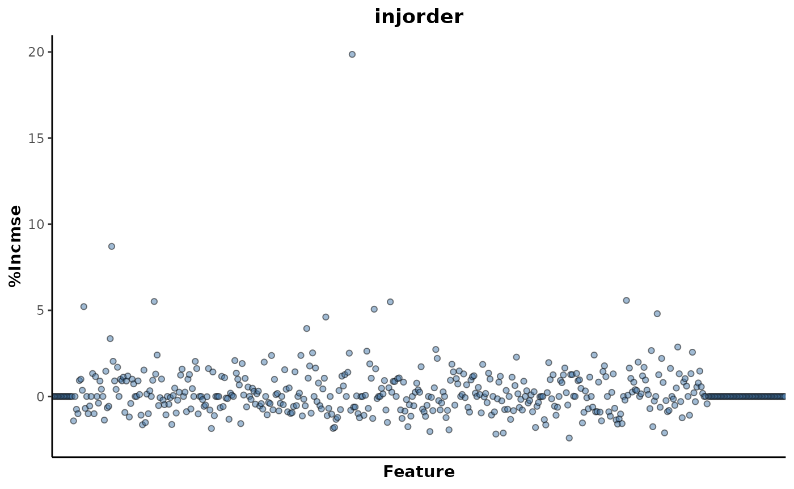

Modelling and feature selection
metabolyseR v0.15.2
Jasen Finch
14 August, 2023
Source:vignettes/modelling.Rmd
modelling.RmdIntroduction
Modelling provides the essential data mining step for extracting
biological information and explanatory metabolome features from a data
set relating to the experimental conditions. metabolyseR
provides a number of both univariate and multivariate methods for data
mining.
For an introduction to the usage of metabolyseR for both exploratory and routine analyses, see the introduction vignette using:
vignette('introduction','metabolyseR')To further supplement this document, a quick start example analysis is also available as a vignette:
vignette('quick_start','metabolyseR')To begin, the package can be loaded using:
library(metabolyseR)
#>
#> Attaching package: 'metabolyseR'
#> The following objects are masked from 'package:stats':
#>
#> anova, predict
#> The following objects are masked from 'package:base':
#>
#> raw, splitExample data
The examples used here will use the abr1 data set from
the metaboData
package. This is nominal mass flow-injection mass spectrometry (FI-MS)
fingerprinting data from a plant-pathogen infection time course
experiment. The pipe %>% from the magrittr package will also be
used. The example data can be loaded using:
Only the negative acquisition mode data (abr1$neg) will
be used along with the sample meta-information (abr1$fact).
Create an AnalysisData class object, assigned to the
variable d, using the following:
d <- analysisData(abr1$neg[,1:500],abr1$fact)
print(d)
#>
#> AnalysisData object containing:
#>
#> Samples: 120
#> Features: 500
#> Info: 9As can be seen above the data set contains a total of 120 samples and 500 features.
Parallel processing
The package supports parallel processing using the future package.
By default, processing by metabolyseR will be done
seqentially. However, parallel processing can be activated, prior to
analysis, by specifying a parallel implementation using
plan(). The following example specifies using the
multisession implementation (muliple background R sessions)
with two worker processes.
plan(future::multisession,workers = 2)See the future package documentation for more information on the types of parallel implementations that are available.
Random Forest
Random forest is a versatile ensemble machine learning approach based on forests of decision trees for multivariate data mining. This can include unsupervised analysis, classification of discrete response variables and regression of continuous responses.
Random forest can be performed in metabolyseR using the
randomForest() method. For further details on the arguments
for using this function, see ?randomForest. This
implementation of random forest in metabolyseR utilises the
randomForest package. See
?randomForest::randomForest for more information about that
implementation.
Unsupervised
The unsupervised random forest approach can be useful starting point for analysis in any experimental context. It can be used to give a general overview of the structure of the data and to identify any possible problems. These could include situations such as the presence of outliers samples or splits in the data caused by the impact of analytical or sample preparation factors. Unsupervised random forest can have advantages in these assessments over other approaches such as Principle Component Analysis (PCA). It is less sensitive to the effect of a single feature that in fact could have little overall impact relative to the other hundreds that could be present in a data set.
The examples below will show the use of unsupervised random forest for assessing the general structure of the example data set and the presence of outlier samples.
Unsupervised random forest can be performed by setting the
cls argument of randomForest() to
NULL:
unsupervised_rf <- d %>%
randomForest(cls = NULL)The type of random forest that has been performed can be checked
using the type method.
type(unsupervised_rf)
#> [1] "unsupervised"Or by printing the results object.
unsupervised_rf
#>
#> Unsupervised random forest
#>
#> Samples: 120
#> Features: 500Firstly, the presence of outlier samples will be assessed. A multidimensional scaling (MDS) plot can be used to visualise the relative proximity of the observations, as shown in the following. The individual points are also labelled by their injection order to enable the identification of individual samples if necessary.
plotMDS(unsupervised_rf,
cls = NULL,
label = 'injorder',
labelSize = 3,
title = 'Outlier detection')From the plot above, it can be seen a single sample lies outside the 95% confidence ellipse. It is unlikely that this sample can be considered an outlier as it’s position is as a result of the underlying class structure as opposed to differences specific to that individual sample.
The structure of these observations can be investigated further by
colouring the points by a different experimental factor. This will be by
the day class column which is the main experimental factor
of interest in this experiment.
plotMDS(unsupervised_rf,
cls = 'day')This shows that it is indeed the experimental factor of interest that is having the greatest impact on the structure of the data. The progression of the experimental time points are obvious across Dimension 1.
The available feature importance metrics for a random forest analysis can be retrieved by:
importanceMetrics(unsupervised_rf)
#> [1] "1" "2" "false_positive_rate"
#> [4] "MeanDecreaseAccuracy" "MeanDecreaseGini" "selection_frequency"And the importance values of these metrics for each feature can returned using:
importance(unsupervised_rf)
#> # A tibble: 3,000 × 3
#> feature metric value
#> <chr> <chr> <dbl>
#> 1 N1 1 0
#> 2 N1 2 0
#> 3 N1 MeanDecreaseAccuracy 0
#> 4 N1 MeanDecreaseGini 0
#> 5 N1 false_positive_rate 0.0238
#> 6 N1 selection_frequency 0
#> 7 N10 1 0
#> 8 N10 2 0
#> 9 N10 MeanDecreaseAccuracy 0
#> 10 N10 MeanDecreaseGini 0
#> # ℹ 2,990 more rowsThe explanatory features for a given threshold can be extracted for any of the importance metrics. The following will extract the explanatory features below a threshold of 0.05 based on the false positive rate metric.
unsupervised_rf %>%
explanatoryFeatures(metric = "false_positive_rate",
threshold = 0.05)
#> # A tibble: 359 × 3
#> feature metric value
#> <chr> <chr> <dbl>
#> 1 N342 false_positive_rate 1.31e-19
#> 2 N161 false_positive_rate 2.34e-16
#> 3 N341 false_positive_rate 6.50e-16
#> 4 N315 false_positive_rate 1.79e-15
#> 5 N367 false_positive_rate 3.47e-14
#> 6 N173 false_positive_rate 9.09e-14
#> 7 N385 false_positive_rate 9.09e-14
#> 8 N133 false_positive_rate 1.52e-12
#> 9 N439 false_positive_rate 1.52e-12
#> 10 N379 false_positive_rate 3.78e-12
#> # ℹ 349 more rowsIn this example there are 359 explanatory features.
The trend of the most highly ranked explanatory feature against the
day factor can be plotted using the
plotFeature() method.
unsupervised_rf %>%
plotFeature(feature = 'N425',
cls = 'day')Classification
Random forest classification can be used to assess the extent of discrimination (difference) between classes of a discrete response variable. This includes both multinomial (number of classes > 2) and binary (number of classes = 2) comparisons.
In multinomial situations, the suitability of a multinomial comparison versus multiple binary comparisons can depend on the experimental context. For instance, in a treatment/control experiment that includes multiple time points, a multinomial comparison using all available classes could be useful to visualise the general structure of the data. However, it could make any extracted explanatory features difficult to reason about as to how they relate to the individual experimental time point or treatment conditions. An investigator could instead identify the binary comparisons relevant to the biological question and focus the further classification comparisons to better select for explanatory features.
Multinomial comparisons
In experiments with more than two classes, multinomial random forest classification can be used to assess the discrimination between the classes and give an overview of the relative structure between classes.
The example data set consists of a total of 6 classes for the
day response variable.
d %>%
clsExtract(cls = 'day') %>%
unique()
#> [1] 2 3 4 1 H 5
#> Levels: 1 2 3 4 5 HMultinomial classification can be performed by:
multinomial_rf <- d %>%
randomForest(cls = 'day')
print(multinomial_rf)
#>
#> Random forest classification
#>
#> Samples: 120
#> Features: 500
#> Response: day
#> # comparisons: 1The performance of this model can be assessed using metrics based on the success of the out of bag (OOB) predictions. The performance metrics can be extracted using:
multinomial_rf %>%
metrics()
#> # A tibble: 4 × 5
#> response comparison .metric .estimator .estimate
#> <chr> <chr> <chr> <chr> <dbl>
#> 1 day 1~2~3~4~5~H accuracy multiclass 0.8
#> 2 day 1~2~3~4~5~H kap multiclass 0.76
#> 3 day 1~2~3~4~5~H margin NA 0.146
#> 4 day 1~2~3~4~5~H roc_auc hand_till 0.964These metrics include accuracy, Cohen’s kappa (kap), area under the receiver operator characteristic curve (roc_auc, ROC-AUC) and margin. Each metric has both strengths and weaknesses that depend on the context of the classification such as the balance of observations between the classes. As shown below, the class frequencies for this example are balanced with 20 observations per class.
d %>%
clsExtract(cls = 'day') %>%
table()
#> .
#> 1 2 3 4 5 H
#> 20 20 20 20 20 20In this context, each of these metrics could be used to assess the predictive performance of the model. The margin metric is the difference between the proportion of votes for the correct class and the maximum proportion of votes for the other classes for a given observation which is then averaged across all the observations. A positive margin value indicates correct classification and values greater than 0.2 can be considered as the models having strong predictive power. The margin also allows the extent of discrimination to be discerned even in very distinct cases above where both the accuracy and ROC-AUC would be registering values of 1.
In this example, the values of all the metrics suggest that the model is showing good predictive performance. This can be investigated further by plotting the MDS of observation proximity values.
This shows that the model is able to discriminate highly between
classes such as 5 and H. It is less able to
discriminate more similar classes such as H and
1 or 4 and 5 whose confidence
ellipses show a high degree of overlap. This makes sense in the context
of this experiment as these are adjacent time points that are more
likely to be similar than time points at each end of the experiment.
The ROC curves can also be plotted as shown below.
Classes with their line further from the central dashed line are
those that were predicted with the greatest reliability by the model.
This plot shows that both the H and 1 classes
were least reliably predicted which is a result of their close proximity
shown in the MDS plot previously.
Importance metrics can be used to identify the metabolome features that contribute most to the class discrimination in the model. The available importance metrics for this model are shown below.
importanceMetrics(multinomial_rf)
#> [1] "1" "2" "3"
#> [4] "4" "5" "false_positive_rate"
#> [7] "H" "MeanDecreaseAccuracy" "MeanDecreaseGini"
#> [10] "selection_frequency"Here, we will use the false positive rate metric with a threshold of
below 0.05 to identify explanatory features for the day
response variable.
multinomial_rf %>%
explanatoryFeatures(metric = 'false_positive_rate',
threshold = 0.05)
#> # A tibble: 121 × 5
#> response comparison feature metric value
#> <chr> <chr> <chr> <chr> <dbl>
#> 1 day 1~2~3~4~5~H N341 false_positive_rate 1.02e-93
#> 2 day 1~2~3~4~5~H N133 false_positive_rate 7.38e-68
#> 3 day 1~2~3~4~5~H N163 false_positive_rate 3.59e-61
#> 4 day 1~2~3~4~5~H N439 false_positive_rate 1.07e-54
#> 5 day 1~2~3~4~5~H N342 false_positive_rate 3.19e-49
#> 6 day 1~2~3~4~5~H N377 false_positive_rate 3.19e-49
#> 7 day 1~2~3~4~5~H N171 false_positive_rate 6.26e-44
#> 8 day 1~2~3~4~5~H N497 false_positive_rate 6.11e-30
#> 9 day 1~2~3~4~5~H N146 false_positive_rate 2.74e-29
#> 10 day 1~2~3~4~5~H N195 false_positive_rate 7.16e-25
#> # ℹ 111 more rowsAs shown above there were a total of 121 explanatory features identified.
Within a multinomial experiment, it is also possible to specify the
exact class comparisons to include, where it might not be suitable to
compare all the classes at once using the comparisons
argument. This should be specified as a named list, the corresponding to
the cls argument. Each named element should then consist of
a vector of comparisons, the classes to compare separated using the
~.
The following specifies two comparisons
(H~1~2,H~1~5) for the day
response variable and displays the performance metrics.
d %>%
randomForest(cls = 'day',
comparisons = list(day = c('H~1~2',
'H~1~5'))) %>%
metrics()
#> # A tibble: 8 × 5
#> response comparison .metric .estimator .estimate
#> <chr> <chr> <chr> <chr> <dbl>
#> 1 day H~1~2 accuracy multiclass 0.833
#> 2 day H~1~2 kap multiclass 0.75
#> 3 day H~1~2 margin NA 0.172
#> 4 day H~1~2 roc_auc hand_till 0.906
#> 5 day H~1~5 accuracy multiclass 0.75
#> 6 day H~1~5 kap multiclass 0.625
#> 7 day H~1~5 margin NA 0.320
#> 8 day H~1~5 roc_auc hand_till 0.909The MDS and ROC curve plots can also be plotted simultaneously for the two comparisons.
d %>%
randomForest(cls = 'day',
comparisons = list(day = c('H~1~2',
'H~1~5'))) %>%
{plotMDS(.,cls = 'day') +
plotROC(.) +
patchwork::plot_layout(ncol = 1)}
Similarly, it is also possible to model multiple response factors
with a single random forest call by specifying a vector of response
class information column names to the cls argument. In the
following, both the name and day response
factors will be analysed and the performance metrics returned in a
single table.
d %>%
randomForest(cls = c('name','day')) %>%
metrics()
#> Unbalanced classes detected. Stratifying sample size to the smallest class size.
#> # A tibble: 8 × 5
#> response comparison .metric .estimator .estimate
#> <chr> <chr> <chr> <chr> <dbl>
#> 1 name 11_2~12_2~12_4~13_4~14_4~15_3 accuracy multiclass 0.35
#> 2 name 11_2~12_2~12_4~13_4~14_4~15_3 kap multiclass 0.212
#> 3 name 11_2~12_2~12_4~13_4~14_4~15_3 margin NA -0.0485
#> 4 name 11_2~12_2~12_4~13_4~14_4~15_3 roc_auc hand_till 0.753
#> 5 day 1~2~3~4~5~H accuracy multiclass 0.8
#> 6 day 1~2~3~4~5~H kap multiclass 0.76
#> 7 day 1~2~3~4~5~H margin NA 0.146
#> 8 day 1~2~3~4~5~H roc_auc hand_till 0.964The MDS plots can also be returned for both models simultaneously.
d %>%
randomForest(cls = c('name','day')) %>%
plotMDS()
#> Unbalanced classes detected. Stratifying sample size to the smallest class size.Binary comparisons
It may in some cases be preferable to analyse class comparisons as multiple binary comparisons.
The possible binary comparisons for a given response variable can be
displayed using the binaryComparisons() method. Below shows
the 15 comparisons for the day response variable.
binaryComparisons(d,cls = 'day')
#> [1] "1~2" "1~3" "1~4" "1~5" "1~H" "2~3" "2~4" "2~5" "2~H" "3~4" "3~5" "3~H"
#> [13] "4~5" "4~H" "5~H"For this example we will only use the binary comparisons containing
the H class.
binary_comparisons <- binaryComparisons(d,cls = 'day') %>%
.[stringr::str_detect(.,'H')]The binary comparisons can then be performed using the following.
binary_rf <- d %>%
randomForest(cls = 'day',
comparisons = list(day = binary_comparisons))
print(binary_rf)
#>
#> Random forest classification
#>
#> Samples: 120
#> Features: 500
#> Response: day
#> # comparisons: 5To run all possible binary comparisons, the
binary = TRUE argument could instead be used.
The MDS plots for each comparison can be visualised to inspect the comparisons.
These plots show good separation in all the comparisons except
H~1 which is also shown by the plot of the performance
metrics below. Each of the comparisons are showing perfect performance
for the accuracy, Cohen’s kappa and ROC-AUC metrics as well as very high
margin values except for the H~1 comparison.
binary_rf %>%
plotMetrics()The explanatory features for these comparisons can be extracted as below using the false positive rate metric and a cut-off threshold of 0.05. This gives a total of 251 explanatory features.
binary_rf %>%
explanatoryFeatures(metric = 'false_positive_rate',
threshold = 0.05)
#> # A tibble: 251 × 5
#> response comparison feature metric value
#> <chr> <chr> <chr> <chr> <dbl>
#> 1 day 2~H N341 false_positive_rate 7.34e-52
#> 2 day 2~H N439 false_positive_rate 1.80e-45
#> 3 day 3~H N342 false_positive_rate 2.71e-39
#> 4 day 2~H N327 false_positive_rate 1.06e-35
#> 5 day 3~H N439 false_positive_rate 1.06e-35
#> 6 day 2~H N477 false_positive_rate 1.60e-34
#> 7 day 3~H N377 false_positive_rate 1.60e-34
#> 8 day 4~H N477 false_positive_rate 7.40e-34
#> 9 day 2~H N447 false_positive_rate 6.48e-30
#> 10 day 3~H N163 false_positive_rate 6.48e-30
#> # ℹ 241 more rowsA heatmap of these explanatory features can be plotted to show their mean relative intensities across the experiment time points. Here, the classes are also refactored to customise the order of the classes on the x-axis.
refactor_cls <- clsExtract(binary_rf,
cls = 'day') %>%
factor(.,levels = c('H','1','2','3','4','5'))
binary_rf <- clsReplace(binary_rf,
value = refactor_cls,
cls = 'day')
binary_rf %>%
plotExplanatoryHeatmap(metric = 'false_positive_rate',
threshold = 0.05,
featureNames = TRUE)Regression
Random forest regression can be used to assess the extent of association of the metabolomic data with continuous response variables.
In this example, the extent of association of injection order with the example data will be assessed.
regression_rf <- d %>%
randomForest(cls = 'injorder')
print(regression_rf)
#>
#> Random forest regression
#>
#> Samples: 120
#> Features: 500
#> Response: injorderThe regression model performance metrics, based on the OOB prediction error, can be extracted using the following:
regression_rf %>%
metrics()
#> # A tibble: 5 × 4
#> response .metric .estimator .estimate
#> <chr> <chr> <chr> <dbl>
#> 1 injorder ccc standard 0.513
#> 2 injorder mae standard 23.5
#> 3 injorder mape standard 154.
#> 4 injorder rmse standard 26.5
#> 5 injorder rsq standard 0.476These regression metrics include R2
(rsq), mean absolute error
(mae), mean absolute percentage error
(mape), root mean squared error
(rmse) and the concordance correlation
coefficient (ccc).
The R2 and concordance correlation coefficient metrics suggest that there is some association of features with the injection order, although this is weak. This is in agreement with mean absolute error metric that shows that on average, the injection order could only be predicted to an accuracy of 23 injection order positions.
The MDS plot belows the relative proximities of the samples based on this injection order regression model. This shows that for the most part, there is little correspondence of the sample positions with their injection order. However, there is a small grouping of samples towards the end of the run around sample ~99 to 120. It suggests that there could have been some analytical issues, for certain features, towards the end of the mass spectral analytical run.
The available feature importance metrics for this regression model can be listed.
regression_rf %>%
importanceMetrics()
#> [1] "%IncMSE" "IncNodePurity"The feature importance metrics can be plotted to give an overview of
their distribution. The following will plot the percentage
increase in the mean squared error (%IncMSE)
importance metric.
regression_rf %>%
plotImportance(metric = "%IncMSE",
rank = FALSE)
This shows that there are only a few features that are contributing to the association with injection order. These explanatory features can be extracted with the following, using a threshold of above 5.
regression_rf %>%
explanatoryFeatures(metric = '%IncMSE',
threshold = 5)
#> # A tibble: 7 × 4
#> response feature metric value
#> <chr> <chr> <chr> <dbl>
#> 1 injorder N283 %IncMSE 19.9
#> 2 injorder N135 %IncMSE 8.71
#> 3 injorder N451 %IncMSE 5.58
#> 4 injorder N161 %IncMSE 5.51
#> 5 injorder N306 %IncMSE 5.49
#> 6 injorder N118 %IncMSE 5.22
#> 7 injorder N297 %IncMSE 5.07This returned a total of 7 explanatory features above this threshold.
The top ranked feature N283 can be plotted to investigate
it’s trend in relation to injection order.
regression_rf %>%
plotFeature(feature = 'N283',
cls = 'injorder')
This shows an increase in the intensity of that feature for samples above 100 in the injection order which corresponds with the cluster that was seen in the MDS plot above.
Univariate analyses
Univariate methods select features, explanatory for response variables, with features tested on an individual basis. These methods offer simplicity and easy interpretation in their use, however they provide no information as to how features may interact.
The univariate methods currently available in
metabolyseR include Welch’s t-test, analysis of variance
(ANOVA) and linear regression. The following sections will provide brief
examples of the use of each of these methods.
Welch’s t-test
Welch’s t-test can be used to select explanatory metabolome features for binary comparisons of discrete variables. By default, all the possible binary comparisons for the categories of a response variable will be tested.
Below shows the possible binary comparisons for the day
response variable for the example data set.
binaryComparisons(d,
cls = 'day')
#> [1] "1~2" "1~3" "1~4" "1~5" "1~H" "2~3" "2~4" "2~5" "2~H" "3~4" "3~5" "3~H"
#> [13] "4~5" "4~H" "5~H"For the following example, only a subset of comparisons will be
tested. These will be selected by supplying a list to the
comparisons argument.
ttest_analysis <- ttest(d,
cls = 'day',
comparisons = list(day = c('H~1',
'H~2',
'H~5')))
print(ttest_analysis)
#>
#> Univariate t-test analysis
#>
#> Samples: 120
#> Features: 500
#> Responses: day
#> # comparisons: 3The explanatory features that show a significant difference between the response categories can be extracted as shown below.
explanatoryFeatures(ttest_analysis,
threshold = 0.05)
#> # A tibble: 73 × 14
#> response comparison feature estimate estimate1 estimate2 statistic p.value
#> <chr> <chr> <chr> <dbl> <dbl> <dbl> <dbl> <dbl>
#> 1 day H~5 N163 -735. 19.5 755. -13.8 1.43e-11
#> 2 day H~5 N341 2445. 2537. 92.6 13.6 2.88e-11
#> 3 day H~5 N133 1055. 1077. 21.9 13.0 5.44e-11
#> 4 day H~2 N341 200. 293. 92.6 10.6 1.38e-10
#> 5 day H~5 N171 62.6 64.7 2.15 11.9 2.62e-10
#> 6 day H~5 N119 17.2 17.9 0.763 11.0 8.54e-10
#> 7 day H~5 N342 243. 247. 4.13 10.8 1.42e- 9
#> 8 day H~5 N343 27.4 28.3 0.961 9.83 5.99e- 9
#> 9 day H~5 N377 152. 157. 5.05 9.81 6.75e- 9
#> 10 day H~5 N477 103. 129. 26.1 9.30 1.05e- 8
#> # ℹ 63 more rows
#> # ℹ 6 more variables: parameter <dbl>, conf.low <dbl>, conf.high <dbl>,
#> # method <chr>, alternative <chr>, adjusted.p.value <dbl>This will threshold the features based on their adjusted p-value,
found in the adjusted.p.value column of the table. The
results of all of the features can be returned using the
importance() method.
A heat map of the explanatory features can be plotted to inspect the
relative trends of the explanatory features in relation to the response
variable.
plotExplanatoryHeatmap(ttest_analysis)ANOVA
ANOVA can be used to select explanatory features for discrete
response variables with 3 or more categories. The following example will
compare all the categories in the day response variable.
However, the comparisons argument can be used to select
particular comparisons of interest.
anova_analysis <- anova(d,
cls = 'day')
print(anova_analysis)
#>
#> Univariate ANOVA analysis
#>
#> Samples: 120
#> Features: 500
#> Responses: day
#> # comparisons: 1The explanatory features that are significantly different between the categories can then be extracted.
explanatoryFeatures(anova_analysis,
threshold = 0.05)
#> # A tibble: 110 × 10
#> response comparison feature term df sumsq meansq statistic p.value
#> <chr> <chr> <chr> <chr> <dbl> <dbl> <dbl> <dbl> <dbl>
#> 1 day 1~2~3~4~5~H N341 response 5 1.09e8 2.17e7 124. 1.90e-44
#> 2 day 1~2~3~4~5~H N163 response 5 1.25e7 2.51e6 113. 1.71e-42
#> 3 day 1~2~3~4~5~H N133 response 5 1.96e7 3.92e6 108. 1.71e-41
#> 4 day 1~2~3~4~5~H N171 response 5 6.29e4 1.26e4 88.8 1.16e-37
#> 5 day 1~2~3~4~5~H N342 response 5 1.04e6 2.07e5 85.1 7.61e-37
#> 6 day 1~2~3~4~5~H N343 response 5 1.19e4 2.38e3 66.1 4.43e-32
#> 7 day 1~2~3~4~5~H N119 response 5 4.92e3 9.83e2 53.8 2.07e-28
#> 8 day 1~2~3~4~5~H N497 response 5 1.10e5 2.20e4 49.6 4.83e-27
#> 9 day 1~2~3~4~5~H N137 response 5 6.32e3 1.26e3 39.9 1.59e-23
#> 10 day 1~2~3~4~5~H N277 response 5 6.31e4 1.26e4 39.1 3.14e-23
#> # ℹ 100 more rows
#> # ℹ 1 more variable: adjusted.p.value <dbl>The top ranked explanatory feature N341 can be plotted
to inspect it’s trend relative to the day response
variable.
plotFeature(anova_analysis,
feature = 'N341',
cls = 'day')Linear regression
Univariate linear regression can be used to associate a continuous response variable with metabolome features. In the example below, the example data will be regressed against injection order to identify any linearly associated metabolome features.
lr_analysis <- linearRegression(d,
cls = 'injorder')
print(lr_analysis)
#>
#> Univariate linear regression analysis
#>
#> Samples: 120
#> Features: 500
#> Responses: injorderThe explanatory features can then be extracted.
explanatoryFeatures(lr_analysis)
#> # A tibble: 8 × 15
#> response feature r.squared adj.r.squared sigma statistic p.value df logLik
#> <chr> <chr> <dbl> <dbl> <dbl> <dbl> <dbl> <dbl> <dbl>
#> 1 injorder N283 0.310 0.304 4.27 53.0 4.10e-11 1 -343.
#> 2 injorder N135 0.165 0.157 78.7 23.2 4.31e- 6 1 -693.
#> 3 injorder N221 0.140 0.133 5.87 19.3 2.50e- 5 1 -382.
#> 4 injorder N473 0.135 0.127 7.24 18.3 3.78e- 5 1 -407.
#> 5 injorder N335 0.132 0.124 20.1 17.9 4.59e- 5 1 -529.
#> 6 injorder N452 0.120 0.112 4.00 16.0 1.10e- 4 1 -335.
#> 7 injorder N255 0.119 0.111 11.1 15.9 1.17e- 4 1 -458.
#> 8 injorder N267 0.118 0.111 26.4 15.8 1.22e- 4 1 -562.
#> # ℹ 6 more variables: AIC <dbl>, BIC <dbl>, deviance <dbl>, df.residual <int>,
#> # nobs <int>, adjusted.p.value <dbl>The top ranked explanatory feature N283 can be plotted
to inspect inspects it’s association with injection order.
plotFeature(lr_analysis,
feature = 'N283',
cls = 'injorder')Routine analyses
For routine analyses, the initial analysis parameters for pre-treatment of the data and then the modelling can be selected.
p <- analysisParameters(c('pre-treatment','modelling'))More specific parameters for pre-treatment of the example data can be declared using the following.
parameters(p,'pre-treatment') <- preTreatmentParameters(
list(
keep = 'classes',
occupancyFilter = 'maximum',
transform = 'TICnorm'
)
)The modellingMethods() function can be used to list the
modelling methods that are currently available in
metabolyseR.
modellingMethods()
#> [1] "anova" "ttest" "linearRegression" "randomForest"The modellingParameters() function can be used to
retrieve the default parameters for specific modelling methods. Below,
the default modelling parameters for the randomForest and
ttest methods are specified.
parameters(p,'modelling') <- modellingParameters(c('randomForest','ttest'))The class parameters can the be universily specified for both the
pre-treatment and modelling elements. For this example, the
day response variable will be used with just the
H and 2 classes.
changeParameter(p,'cls') <- 'day'
changeParameter(p,'classes') <- c('H','2')This gives the following parameters for the analysis.
p
#> Parameters:
#> pre-treatment
#> keep
#> classes
#> cls = day
#> classes = c("H", "2")
#> occupancyFilter
#> maximum
#> cls = day
#> occupancy = 2/3
#> transform
#> TICnorm
#> refactor = TRUE
#>
#> modelling
#> randomForest
#> cls = day
#> rf = list()
#> reps = 1
#> binary = FALSE
#> comparisons = list()
#> perm = 0
#> returnModels = FALSE
#> seed = 1234
#> ttest
#> cls = day
#> pAdjust = bonferroni
#> comparisons = list()
#> returnModels = FALSEThe analysis can then be executed.
analysis <- metabolyse(abr1$neg,abr1$fact,p)
#>
[34m
#> metabolyseR
[39m
[31mv0.15.2
[39m Mon Aug 14 15:19:00 2023
#> ________________________________________________________________________________
#>
[33m
[33mParameters:
[33m
[39m
#> pre-treatment
#> keep
#> classes
#> cls = day
#> classes = c("H", "2")
#> occupancyFilter
#> maximum
#> cls = day
#> occupancy = 2/3
#> transform
#> TICnorm
#> refactor = TRUE
#>
#> modelling
#> randomForest
#> cls = day
#> rf = list()
#> reps = 1
#> binary = FALSE
#> comparisons = list()
#> perm = 0
#> returnModels = FALSE
#> seed = 1234
#> ttest
#> cls = day
#> pAdjust = bonferroni
#> comparisons = list()
#> returnModels = FALSE
#> ________________________________________________________________________________
#>
[34mPre-treatment
[39m…
[34mPre-treatment
[39m
[32m✔
[39m [0.5S]
#>
[34mModelling
[39m…
[34m
Modelling
[39m
[32m✔
[39m [10.1S]
#> ________________________________________________________________________________
#>
#>
[32mComplete!
[39m[10.6S]The results for the modelling can be specifically extracted using the following.
analysisResults(analysis,'modelling')
#> $randomForest
#>
#> Random forest classification
#>
#> Samples: 40
#> Features: 1713
#> Response: day
#> # comparisons: 1
#>
#>
#> $ttest
#>
#> Univariate t-test analysis
#>
#> Samples: 40
#> Features: 1713
#> Responses: day
#> # comparisons: 1This returns the results as a list containing the modelling results objects for each specified method.
Alternatively, the modelling results can be assess directly from the
Analysis object. Below shows the extraction of the
explanatory features, using default parameters for each method, with the
results returned in a single table.
explanatory_features <- analysis %>%
explanatoryFeatures()
print(explanatory_features)
#> # A tibble: 100 × 17
#> Method response comparison feature metric value estimate estimate1
#> <chr> <chr> <chr> <chr> <chr> <dbl> <dbl> <dbl>
#> 1 randomForest day 2~H N341 false_p… 8.06e-28 NA NA
#> 2 randomForest day 2~H N377 false_p… 5.70e-18 NA NA
#> 3 randomForest day 2~H N447 false_p… 5.70e-18 NA NA
#> 4 randomForest day 2~H N579 false_p… 5.70e-18 NA NA
#> 5 randomForest day 2~H N1084 false_p… 1.19e-16 NA NA
#> 6 randomForest day 2~H N327 false_p… 2.33e-15 NA NA
#> 7 randomForest day 2~H N580 false_p… 4.32e-14 NA NA
#> 8 randomForest day 2~H N1083 false_p… 7.49e-13 NA NA
#> 9 randomForest day 2~H N1085 false_p… 7.49e-13 NA NA
#> 10 randomForest day 2~H N503 false_p… 7.49e-13 NA NA
#> # ℹ 90 more rows
#> # ℹ 9 more variables: estimate2 <dbl>, statistic <dbl>, p.value <dbl>,
#> # parameter <dbl>, conf.low <dbl>, conf.high <dbl>, method <chr>,
#> # alternative <chr>, adjusted.p.value <dbl>Heat maps of the explanatory features can also be plotted for both the modelling methods.
plotExplanatoryHeatmap(analysis) %>%
patchwork::wrap_plots()